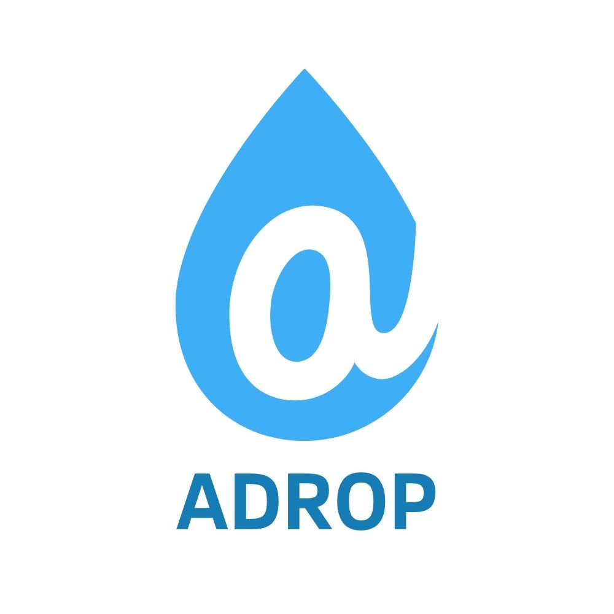

Boas vindas a Adrop!
Data:
Tema: Filosofia
Autor: Naiara Matanovic

O que é a Adrop?
História do projeto:
A Adrop começou em 2024 com um grupo de amigos que queria aprender sem se sobrecarregar. A ideia deu certo e virou uma plataforma.
Nossa missão:
Tornar o aprendizado leve e constante, um pouco por dia.
Como nosso sistema funciona?
"Uma gota" de aprendizado por vez:
Cada dia você recebe uma lição curta. Com o tempo, essas pequenas lições se somam e você aprende o tema inteiro.